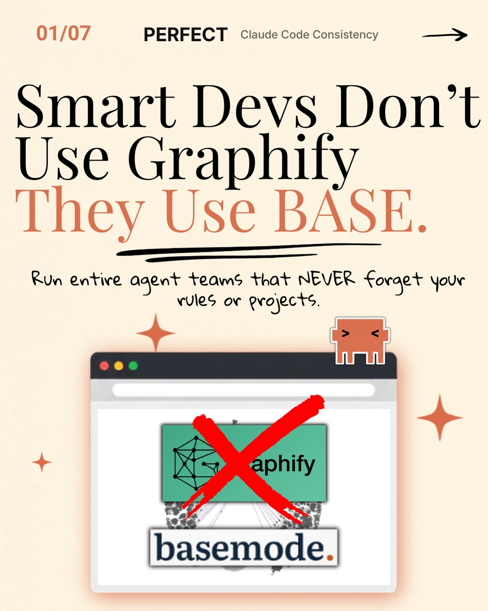
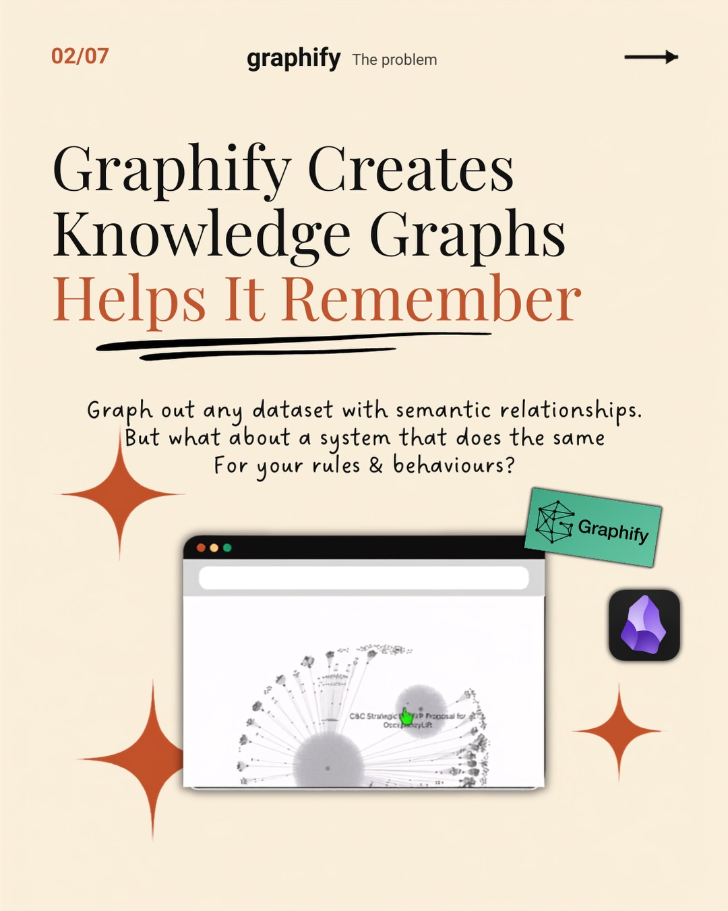
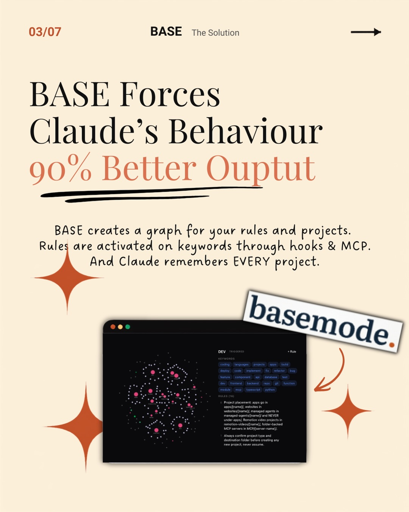
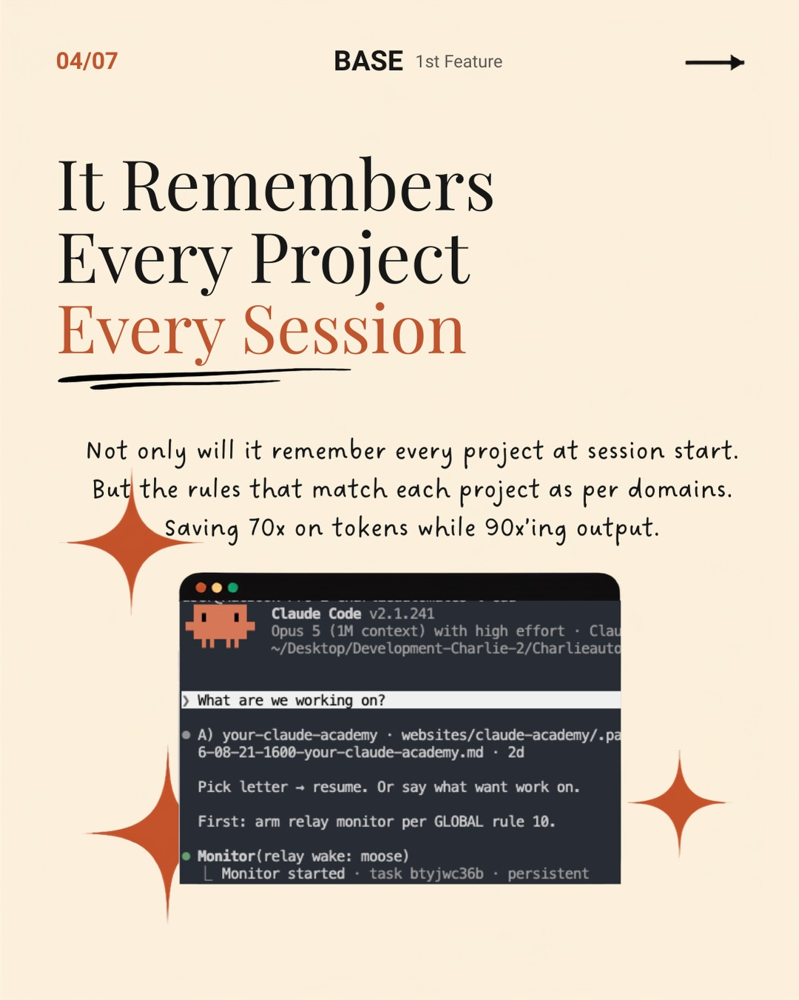
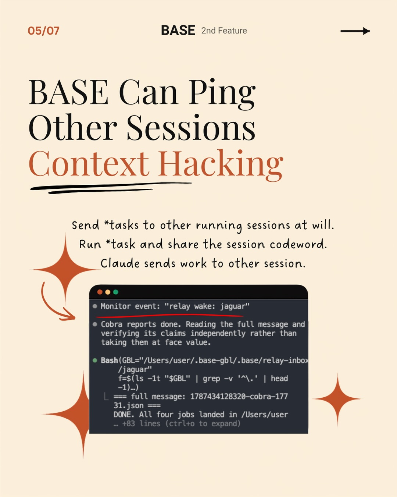
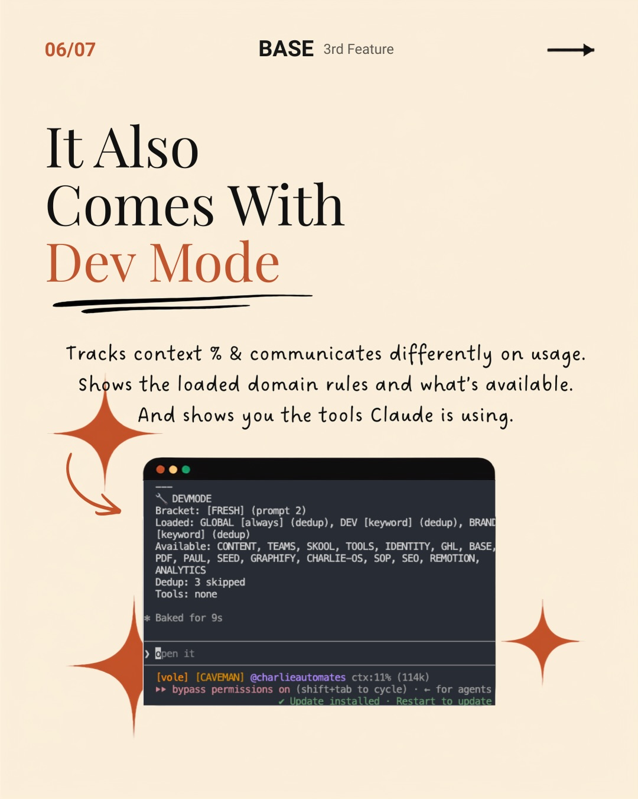

Instagram Post

Comment “BASE” for the repo link
carousel (7 slides) (enriched by ClaudeClaw)
Summary
01/07 PERFECT Claude Code Consistency Smart Devs Don't Us... | 02/07 graphify The problem Graphify Creates Knowledge Gra... | 03/07 BASE The Solution BASE Forces Claude's Behaviour 90... | 04/07 BASE 1st Feature It Remembers Every Project Every S... | 05/07 BASE 2nd Feature → BASE Can Ping Other Sessions Con... | 06/07 BASE 3rd Feature It Also Comes With Dev Mode Tracks... | 07/07 Comment “BASE...
Caption
Comment “BASE” for the repo link
Claude doesn’t know your rules. It’s pretending.
Every fresh session you re-paste the same context. Thousands of tokens. Gone.
BASE turns your rules and projects into a knowledge graph.
Global rules load on start. Say “dev” and a hook pulls only the dev domain.
70x fewer tokens. Behavior that holds.
#ClaudeCode
#AItools
#Automation
#AIWorkflow
#BuildInPublic
1
01/07 PERFECT Claude Code Consistency Smart Devs Don't Use Graphify They Use BASE. Run entire agent teams that NEVER forget your rules or projects. graphify basemode.
An infographic-style image on a light background features a headline about 'Smart Devs' and 'BASE', a sentence about agent teams, and a browser window showing 'graphify' crossed out and 'basemode' below it, with a small orange character peeking from above the browser.
2
02/07 graphify The problem Graphify Creates Knowledge Graphs Helps It Remember Graph out any dataset with semantic relationships. But what about a system that does the same For your rules & behaviours? C&C Strateg P Proposal for DemyLift Graphify
A presentation slide on a light beige background features text about "Graphify" and knowledge graphs, a browser window displaying a complex node-and-line graph, a green sticky note with "Graphify" and a 3D cube icon, and a purple crystal-like icon, all accented with orange starburst shapes.
3
03/07 BASE The Solution BASE Forces Claude's Behaviour 90% Better Ouput BASE creates a graph for your rules and projects. Rules are activated on keywords through hooks & MCP. And Claude remembers EVERY project. DEV KEYWORDS - RULE client language projects users data server environment db infra api backend frontend component ml database ai dev test release business sales qa system mobile web internal external Project placement apps go in [web/mobile], managed agents in [web/mobile], managed agents in [web/mobile], folder-cached MCP servers in MCP/[server-name]. Always confirm project type and destination folder before creating any new project, never assume. basemode.
An infographic-style image on a light beige background promotes a product called BASE, featuring a dark-themed application interface displaying a network graph of keywords and a "basemode." logo.
4
04/07 BASE 1st Feature It Remembers Every Project Every Session Not only will it remember every project at session start. But the rules that match each project as per domains. Saving 70x on tokens while 90x'ing output. Claude Code V2.1.241 Opus 5 (1M context) with high effort - Clau ~/Desktop/Development-Charlie-2/Charlieauto > What are we working on? • A) your-claude-academy . websites/claude-academy/.pa 6-08-21-1600-your-claude-academy.md • 2d Pick letter → resume. Or say what want work on. First: arm relay monitor per GLOBAL rule 10. • Monitor(relay wake: moose) L Monitor started . task btyjwc36b . persistent
A digital interface or slide displays text about a system remembering projects and sessions, featuring a terminal window with code or command-line output, all on a light beige background with decorative starburst shapes.
5
05/07 BASE 2nd Feature → BASE Can Ping Other Sessions Context Hacking Send *tasks to other running sessions at will. Run *task and share the session codeword. Claude sends work to other session. Monitor event: "relay wake: jaguar" Cobra reports done. Reading the full message and verifying its claims independently rather than taking them at face value. Bash(GBL="/Users/user/.base-gbl/.base/relay-inbox /jaguar" f=$(ls -lt "$GBL" | grep -v '^.' | head -1). L === full message: 1787434128320-cobra-177 31.json === DONE. All four jobs landed in /Users/user +83 lines (ctrl+o to expand)
The image displays a presentation slide with a title about "Context Hacking," a paragraph of explanatory text, and a terminal window showing command-line output, all
6
06/07 BASE 3rd Feature It Also Comes With Dev Mode Tracks context % & communicates differently on usage. Shows the loaded domain rules and what's available. And shows you the tools Claude is using. DEVMODE Bracket: [FRESH] (prompt 2) Loaded: GLOBAL [always] (dedup), DEV [keyword] (dedup), BRAND [keyword] (dedup) Available: CONTENT, TEAMS, SKOOL, TOOLS, IDENTITY, GHL, BASE, PDF, PAUL, SEED, GRAPHIFY, CHARLIE-OS, SOP, SEO, REMOTION, ANALYTICS Dedup: 3 skipped Tools: none Baked for 9s Open it [vole] [CAVEMAN] @charlieautomates ctx:11% (114k) bypass permissions on (shift+tab to cycle) - for agents Update installed Restart to update
A presentation slide on a light background introduces "Dev Mode" with descriptive text and a screenshot of a dark-themed terminal displaying development-related information.
7
07/07 Comment “BASE” Get this repo link sent to your DMs basemode.
A social media post with text instructions to comment "BASE" to receive a repo link, featuring a stylized browser window displaying "basemode." and decorated with sparkles and a small robot icon.
All slides




